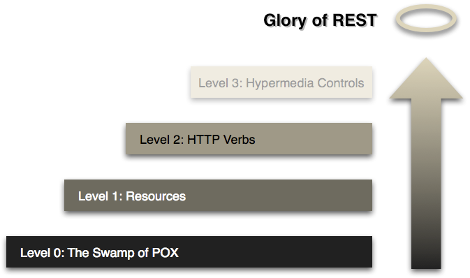
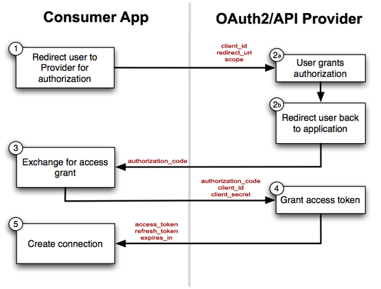

Don't place it in the URL (e.g. api.twitter.com/v1/… is wrong)
Solution: see further
Filtering & Sorting
Use URL params ?filter=foo&sort=asc
Limiting fields
Use an URL param ?fields=firstname,lastname,age
URL Design Sidenotes (2)
Pagination
Mandatory for huge resources
Use limit and offset URL params
Defaulting to ?limit=10&offset=<max_id>
Avoid using numbers for offset, opt for id-constraint based on sorting method; this avoids doubles when paginating over a frequently updated result set.
2. HTTP Verbs & HTTP Response Codes

What?
Don't limit yourself to POST, but use all HTTP verbs
e.g. POST, GET, PUT, PATCH, DELETE, …
Depending on the HTTP verb used, a specific action will be taken
When an action has been taken, correctly use the HTTP response codes
e.g. 404, 500, …
HTTP Verbs
HTTP Verbs = CRUD = Queries
POST = Create = INSERT
GET = Read = SELECT
PUT = Update = UPDATE
PATCH = Update = UPDATE
DELETE = Delete = DELETE
Examples
POST /products(data via $_POST)
GET /products or GET /products/1234
PUT /products/1234(data via “$_PUT”)
DELETE /products/1234
HTTP Verbs Sidenote: PATCH vs. PUT
What's the difference?
PUT = replace a resource entirely
PATCH = partially replace a resource
But ...
The PATCH method applies a delta (diff) rather than replacing the entire resource. The request entity to PATCH is of a different content-type that the resource that is being modified. Instead of being an entire resource representation, it is a resource that describes changes to apply on a resource.
Do a POST request to /api/lecturers with some data in $_POST to insert a new lecturer
Get back 201 — Created if all OK
Get back 400 — Bad Request if parameters are missing
Do a PUT request to /api/lecturers/2 with some data in $_PUT to update a lecturer
Get back 200 — OK if all OK
Get back 400 — Bad Request if parameters are missing
Get back 404 — Not Found if the lecturer does not exist
3. Hypermedia Controls
What?
Represent resources using a Hypermedia Format.
Hypermedia = The simultaneous presentation of information and controls such that the information becomes the affordance through which the user obtains choices and selects actions⚑
Consequence: HATEOAS
HATEOAS = Hypermedia as the Engine of Application State
Application State = Where the user is in the process of completing a task (e.g. a page of the application)
Roughly translated:
The response must be hypertext and include links so that the user/automation can transition to other pages of the application
HATEOAS (2)
Essentially, an API consumer should only know
The URI starting point
How to parse the response (viz. what media type it is)
With this, the consumer has enough info to parse out the links and transition to other states when needed
When an API embraces HATEOAS, we can call it a Hypermedia API
When no value can be found in the RFC, pick your own (e.g. photos)
API Call Example
Do a GET request to /lecturers and get back a custom JSON response with HTTP status code 200 containing a list of lecturers (with resource links) as the response content
Since the API returns both OK and errorous HTTP status codes, you need to hook both success and error functions
$.ajax({
url : 'http://api.myapp.tld/',
type: 'get|post|put|delete',
dataType : 'json',
data: 'foo=bar'
})
.success(function(data, textStatus, jqXHR) {
if (data) {
// All OK and data returned (200, 201)
} else {
// All OK but no data returned (e.g. 204 after a DELETE)
}
})
.error(function(jqXHR, textStatus, errorThrown) {
var data = jqXHR.responseText ? JSON.parse(jqXHR.responseText) : {};
// Got a 400 (params), 401, 404, 405 (method), 500, or 501 (not impl)
});
CORS
API Authentication
Who are those horrible orange creatures over there? — Grunka-Lunkas. — Tell them I hate them!
API Authentication
Two needs for authentication
API Consumers (apps using your API)
User Authentication (allowing apps using your API to act on behalf of a user)
1. API Consumers (1)
Make use of API-Keys
Require API-Key to be sent in via a header
Check API-Key as a before middleware on all routes
$router->before('GET|POST|PUT|DELETE', '.*', function() use ($response) {
$headers = apache_request_headers();
if(!isset($headers['X-Api-Key']) || !ApiDB::isValidApiKey($headers['X-Api-Key'])) {
$response->setStatus(401);
$response->setContent('Missing or invalid API Key.');
$response->finish();
}
});
Note: Custom headers must start with X and all words must be ucfirst'd and separated with -
1. API Consumers (2)
Note: apache_request_headers() not always available (IIS)!
Paste in the code below to always have it available
if (!function_exists('apache_request_headers')) {
eval('
function apache_request_headers() {
foreach($_SERVER as $key=>$value) {
if (substr($key,0,5)=="HTTP_") {
$key=str_replace(" ","-",ucwords(strtolower(str_replace("_"," ",substr($key,5)))));
$out[$key]=$value;
}
}
return $out;
}
');
}
2. User Authentication (1)
API Consumers should never ask the user his/her username/password (password anti-pattern!) but should use OAuth2 which works with time-limited access tokens to accessing user data
2. User Authentication (2)
OAuth2, schematic

2. User Authentication (3)
OAuth2 in words
User is sent to the OAuth provider (along the consumer app's API-Key (client_id) for identification), asking if consumer app may access user data at a certain scope(read/write)
If user accepts the OAuth provider will redirect back to the consumer app's redirect_uri with an authorization_code
In the background, the consumer app must make a request to the OAuth provider with that authorization_code, along with its API-Key (client_id) and secret key (client_secret)
The OAuth provider will issue an access_token and refresh_token
The access_token must passed with all calls made and is valid for a limited time
When the access_token has expired, the consumer app needs to do a call to the OAuth Prodider with the refresh_token to get a new pair access_token & refresh_token
API Authentication
API-Keys are easily implemented, both consumer and provider side
Once you get the gist of it, OAuth2 is fairly easy …
Roll your own implementation, or use a prefab solution (#lmgtfy)